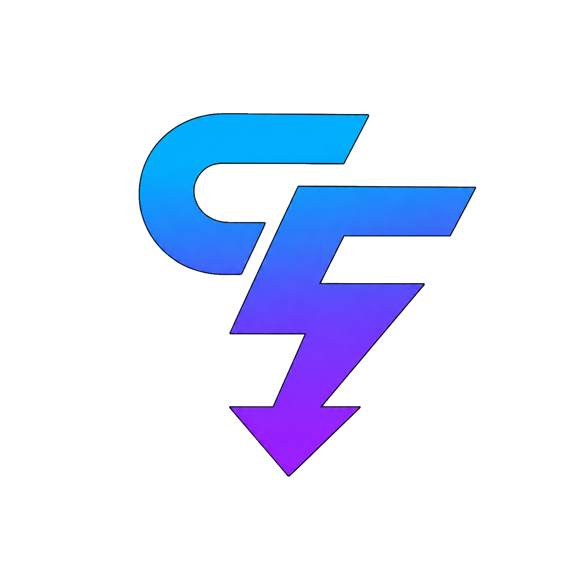

Downloads que sobrevivem ao caminho
Pausa, retomada e validação de arquivo para continuar transferências sem depender de sorte.

SFDownloader Baixar para WindowsUm gerenciador de downloads nativo para quem quer acompanhar, organizar e retomar arquivos sem transformar isso em trabalho.
Para links diretos, arquivos grandes, torrents e a rotina inteira entre abrir o navegador e ter o arquivo no lugar certo.
Continue quando for melhor para você.
Defina prioridade e limite de velocidade.
Use pastas por categoria se quiser.
A interface mostra o que importa no momento certo. O resto continua trabalhando em segundo plano.
Pausa, retomada e validação de arquivo para continuar transferências sem depender de sorte.
A extensão envia o link para o aplicativo localmente, mantendo você no controle antes do download começar.
Defina um destino único ou organize por categoria. As pastas são criadas somente quando um download precisa delas.
Baixe, acompanhe e extraia ZIP, RAR, 7Z e outros formatos, com suporte a magnet links e BitTorrent.
A integração usa a ponte local em 127.0.0.1. Nada fica exposto na rede e o app não instala atualizações sem a sua ação.